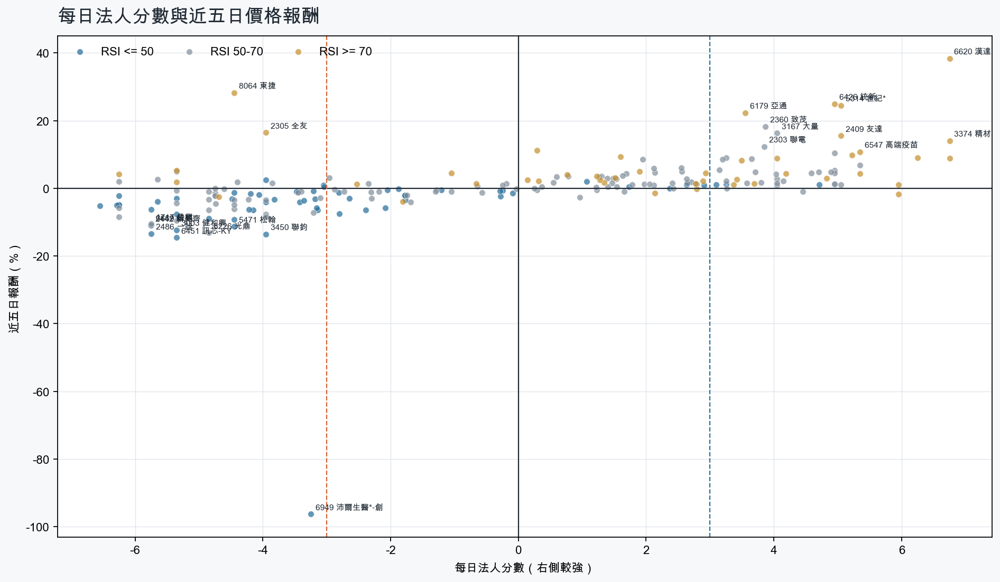
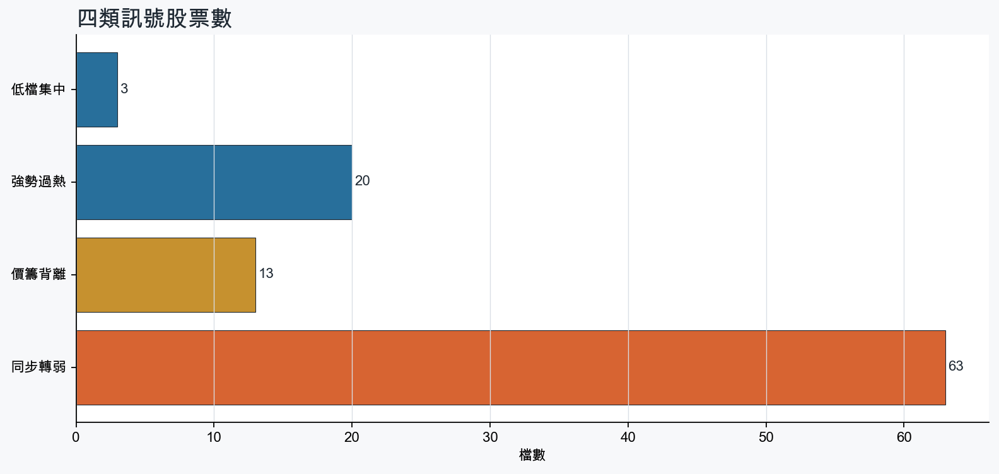
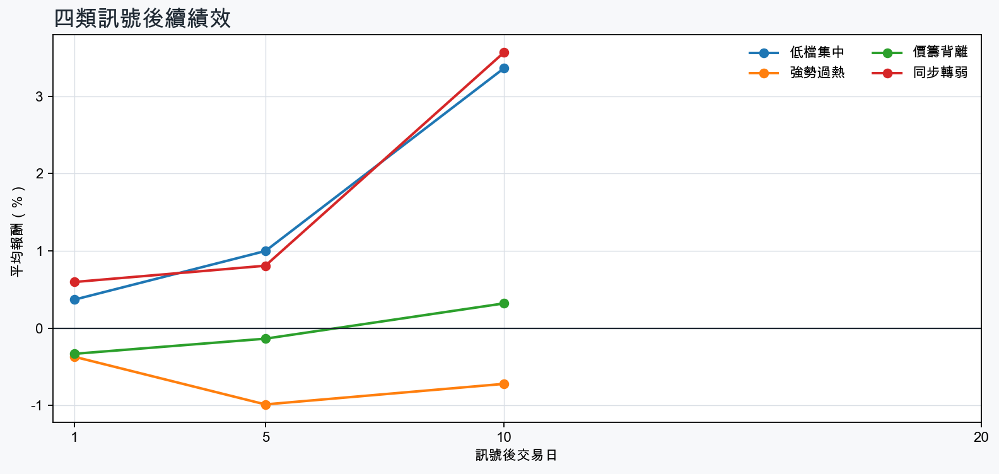

市場情緒偏多
近5日法人合計+651,492 張
篩選池上漲比例53.0%
籌碼好 / RSI低3 檔
籌碼差 / 價跌15 檔



EPS × PE VALUATION
法人常用的相對估值
顯示保守、基準與樂觀估值帶，不把單一數字包裝成精準目標價。
最新累計 EPS 依季數年化 × 同產業有效 P/E 的 Q25／中位數／Q75。排除本公司、非正 P/E，並以 1.5×IQR 排除離群值。估值帶是公開資料篩選值，不是法人目標價；未使用分析師預估 EPS。
MOOD × MONEY
情緒與籌碼雷達
熱度代表被討論程度；情緒分與法人方向分開計算。熱門不等於適合追價，樣本不足也不硬判多空。
| 股票 | 情緒 | 討論熱度 | 情緒 × 籌碼 | 情緒 × 基本面 |
|---|---|---|---|---|
| 3045 台灣大強勢過熱 | 情緒高漲 +90.7信心 100 | 1001 篇 / 455 留言 / 3 則新聞 | 情籌共振法人分 +4.8 | 基本面與情緒共振基本面分 +2.4 |
| 2454 聯發科強勢過熱 | 中性分歧 +13.0信心 100 | 882 篇 / 206 留言 / 3 則新聞 | 高熱分歧法人分 +3.5 | 基本面與情緒分歧基本面分 +3.0 |
| 6669 緯穎同步轉弱 | 中性分歧 +7.2信心 100 | 852 篇 / 163 留言 / 3 則新聞 | 高熱分歧法人分 -5.8 | 基本面與情緒分歧基本面分 +3.0 |
| 3532 台勝科強勢過熱 | 情緒高漲 +46.4信心 59 | 621 篇 / 35 留言 / 1 則新聞 | 情籌共振法人分 +5.2 | 基本面與情緒分歧基本面分 -0.2 |
| 5388 中磊同步轉弱 | 偏多 +22.4信心 50 | 601 篇 / 31 留言 / 1 則新聞 | 熱門但法人撤退法人分 -6.2 | 基本面與情緒共振基本面分 +3.0 |
| 5351 鈺創價籌背離 | 中性分歧 +0.0信心 62 | 581 篇 / 20 留言 / 3 則新聞 | 情籌混合法人分 -3.0 | 基本面與情緒分歧基本面分 +3.6 |
| 6620 漢達強勢過熱 | 偏多 +34.2信心 59 | 571 篇 / 17 留言 / 3 則新聞 | 情籌共振法人分 +6.8 | 基本面與情緒共振基本面分 +1.2 |
| 3693 營邦強勢過熱 | 中性分歧 -1.0信心 48 | 531 篇 / 13 留言 / 2 則新聞 | 情籌混合法人分 +6.2 | 基本面與情緒分歧基本面分 +3.6 |
| 2486 一詮同步轉弱 | 中性分歧 +0.0信心 30 | 370 篇 / 0 留言 / 3 則新聞 | 情籌混合法人分 -5.8 | 基本面與情緒分歧基本面分 +3.0 |
| 6226 光鼎同步轉弱 | 中性分歧 +0.0信心 30 | 370 篇 / 0 留言 / 3 則新聞 | 情籌混合法人分 -4.8 | 基本面與情緒分歧基本面分 +1.2 |
| 6209 今國光同步轉弱 | 偏多 +29.7信心 30 | 370 篇 / 0 留言 / 3 則新聞 | 熱門但法人撤退法人分 -4.5 | 基本面與情緒共振基本面分 +3.6 |
| 8039 台虹同步轉弱 | 中性分歧 +0.0信心 30 | 370 篇 / 0 留言 / 3 則新聞 | 情籌混合法人分 -4.0 | 基本面與情緒分歧基本面分 +1.1 |
01
籌碼好 / RSI低
優先研究基本面；法人續買且價格止穩時，才適合分批觀察。
| 股票 / 確認狀態 | 每日法人分 | 浦男式近似 | 法人加速度 | RSI / 相對強弱 | 量價確認 | 融資融券 | 每週集保確認 | 基本面 | EPS × 同業 P/E 估值 | 情緒 / 情籌 | 近期消息 | 論壇討論 |
|---|---|---|---|---|---|---|---|---|---|---|---|---|
| 2023 燁輝等待確認 · 70 分先等基本面止穩 | +3.1法人 +1,580 張 / 5 天 | 接近 · 64站上月線；中期均線偏多；法人籌碼偏多；留意相對強度普通、量能尚未確認 | +678 張近3日 +1,214 / 連續 +6 日 | 50.0相對大盤 -2.2% | 量比 0.66確認分 +1.7流動性偏低 | -%融資 - 張 / 融券 - 張 | -0.09 pp1000張 -0.10 pp | 單月營收年增 +11.0%累計營收年增 -5.7%；2026 Q2 累計 EPS -0.52；2026 Q2 累計營益率 1.3%來源：公開資訊觀測站 | 不適用年化 EPS 非正數，不適合使用本益比估值 | 樣本不足 +0.0熱度 22 / 信心 10情緒樣本不足 | 【2026/08月營收公告】燁輝(2023) 八月營收47.77億元，營收雙減，年減14.31％cmoney.tw · 09/09 | 近期沒有明確提及本股的論壇樣本 |
| 5483 中美晶等待確認 · 41 分籌碼有訊號，但價格尚未確認 | +4.7法人 +5,864 張 / 4 天 | 未命中 · 44法人籌碼偏多；買超具延續性；基本面有支撐；留意未站月線、中期均線未翻多 | -6,524 張近3日 -1,248 / 連續 +1 日 | 45.0相對大盤 -5.8% | 量比 0.24確認分 -5.8收盤跌破20日線；20日線低於60日線；近20日弱於大盤；成交量不足；法人買盤減速 | +0.5%融資 +84 張 / 融券 -4 張 | -3.31 pp1000張 -3.23 pp | 單月營收年增 +27.7%；累計營收年增 +5.4%；2026 Q2 累計 EPS 5.02仍需觀察下一期財報延續性來源：公開資訊觀測站 | 基準 NT$ 262.0估值帶 183.6–465.1現價 181.0 · 低於估值帶 · 距基準 +44.8%2026 Q2 累計 EPS 5.02 → 年化 10.04半導體同業 P/E 18.29／26.10／46.32 · n=148 · 信心中等以 Q2 累計 EPS 年化，不等同分析師全年預估來源：TWSE／TPEx 每日本益比 | 樣本不足 +0.0熱度 22 / 信心 10情緒樣本不足 | 5483 中美晶- 三重農家出豪女！ 強勢領軍6500億上市櫃公司- 股市爆料同學會cmoney.tw · 09/09 | 近期沒有明確提及本股的論壇樣本 |
| 2478 大毅等待確認 · 32 分籌碼有訊號，但價格尚未確認 | +3.2法人 +1,751 張 / 2 天 | 未命中 · 39法人籌碼偏多；基本面有支撐；流動性足夠；留意未站月線、中期均線未翻多 | -2,823 張近3日 -535 / 連續 +1 日 | 44.2相對大盤 -8.3% | 量比 0.25確認分 -6.3收盤跌破20日線；20日線低於60日線；近20日弱於大盤；成交量不足；法人買盤減速 | -%融資 - 張 / 融券 - 張 | -5.49 pp1000張 -8.30 pp | 單月營收年增 +47.5%；累計營收年增 +19.8%；2026 Q2 累計 EPS 2.91仍需觀察下一期財報延續性來源：公開資訊觀測站 | 基準 NT$ 150.0估值帶 104.6–261.4現價 122.5 · 估值帶內 · 距基準 +22.4%2026 Q2 累計 EPS 2.91 → 年化 5.82電子零組件同業 P/E 17.97／25.77／44.91 · n=150 · 信心中等以 Q2 累計 EPS 年化，不等同分析師全年預估來源：TWSE／TPEx 每日本益比 | 樣本不足 +0.0熱度 0 / 信心 0情緒樣本不足 | 近期沒有通過股票語境篩選的新聞 | 近期沒有明確提及本股的論壇樣本 |
02
籌碼好 / RSI高
趨勢強但不追價，等待量縮、RSI降溫或回測支撐。
| 股票 / 確認狀態 | 每日法人分 | 浦男式近似 | 法人加速度 | RSI / 相對強弱 | 量價確認 | 融資融券 | 每週集保確認 | 基本面 | EPS × 同業 P/E 估值 | 情緒 / 情籌 | 近期消息 | 論壇討論 |
|---|---|---|---|---|---|---|---|---|---|---|---|---|
| 3680 家登等待拉回 · 100 分等拉回，不追價 | +6.8法人 +2,890 張 / 5 天 | 接近 · 86站上月線；中期均線偏多；法人籌碼偏多；留意量能異常、動能位置非最佳 | +2,042 張近3日 +2,521 / 連續 +7 日 | 73.7相對大盤 +21.4% | 量比 4.72確認分 +5.3價格、量能與籌碼未見明顯弱項 | -1.5%融資 -44 張 / 融券 -7 張 | +2.59 pp1000張 +3.52 pp | 單月營收年增 +71.7%；累計營收年增 +28.7%；2026 Q2 累計 EPS 8.09仍需觀察下一期財報延續性來源：公開資訊觀測站 | 基準 NT$ 413.6估值帶 295.9–749.5現價 566.0 · 估值帶內 · 距基準 -26.9%2026 Q2 累計 EPS 8.09 → 年化 16.18半導體同業 P/E 18.29／25.56／46.32 · n=148 · 信心中等以 Q2 累計 EPS 年化，不等同分析師全年預估來源：TWSE／TPEx 每日本益比 | 樣本不足 +0.0熱度 22 / 信心 10情緒樣本不足 | 台積電12吋光罩革命光罩亮燈.家登也觸漲停| 科技非凡新聞台 · 09/09 | 近期沒有明確提及本股的論壇樣本 |
| 6426 統新等待拉回 · 100 分等拉回，不追價 | +5.0法人 +3,042 張 / 3 天 | 命中 · 96站上月線；中期均線偏多；法人籌碼偏多；留意動能位置非最佳 | +1,200 張近3日 +1,848 / 連續 -1 日 | 75.0相對大盤 +40.9% | 量比 2.13確認分 +6.5價格、量能與籌碼未見明顯弱項 | -%融資 - 張 / 融券 - 張 | +5.31 pp1000張 +4.12 pp | 單月營收年增 +52.7%；累計營收年增 +66.8%；2026 Q2 累計 EPS 2.96仍需觀察下一期財報延續性來源：公開資訊觀測站 | 基準 NT$ 124.6估值帶 88.39–214.5現價 321.0 · 高於估值帶 · 距基準 -61.2%2026 Q2 累計 EPS 2.96 → 年化 5.92通信網路同業 P/E 14.93／21.04／36.23 · n=58 · 信心中等以 Q2 累計 EPS 年化，不等同分析師全年預估來源：TWSE／TPEx 每日本益比 | 偏多 +19.8熱度 32 / 信心 20情籌混合 | 【13:04 即時新聞】統新(6426)股價上漲4.4%至320.5元，光通訊濾光片需求與自結獲利加持＋法人與主力買盤推升多頭結構CMoney投資網誌 · 09/09統新8月營收7,334.00 萬元TechNews 科技新報 · 09/09 | 近期沒有明確提及本股的論壇樣本 |
| 3693 營邦等待拉回 · 100 分等拉回，不追價 | +6.2法人 +2,498 張 / 5 天 | 接近 · 90站上月線；中期均線偏多；法人籌碼偏多；留意RSI過熱 | +40 張近3日 +1,517 / 連續 +10 日 | 92.6相對大盤 +35.8% | 量比 1.72確認分 +5.7價格、量能與籌碼未見明顯弱項 | -1.7%融資 -70 張 / 融券 -1 張 | +5.23 pp1000張 +2.90 pp | 單月營收年增 +148.9%；累計營收年增 +11.1%；2026 Q2 累計 EPS 8.66仍需觀察下一期財報延續性來源：公開資訊觀測站 | 基準 NT$ 273.5估值帶 217.5–409.4現價 700.0 · 高於估值帶 · 距基準 -60.9%2026 Q2 累計 EPS 8.66 → 年化 17.32電腦及週邊同業 P/E 12.56／15.79／23.64 · n=78 · 信心中等以 Q2 累計 EPS 年化，不等同分析師全年預估來源：TWSE／TPEx 每日本益比 | 中性分歧 -1.0熱度 53 / 信心 48情籌混合 | 【12:37 即時新聞】營邦(3693)股價走強至698元、上漲4.33%，AI伺服器訂單與營收創高加持＋主力與法人同步買超推升多方結構CMoney投資網誌 · 09/093693 營邦 - 外資主力買很大，散戶持續減碼，每天測均線 洗刷 尾盤收712... - 股市爆料同學會cmoney.tw · 09/09 | [情報] 3693 營邦 115年8月營收PTT Stock · 09-07 · 13 留言 |
| 2455 全新等待拉回 · 96 分等拉回，不追價 | +6.0法人 +6,068 張 / 5 天 | 接近 · 79站上月線；中期均線偏多；法人籌碼偏多；留意法人買盤未加速、量能異常 | -3,655 張近3日 +3,257 / 連續 +6 日 | 72.2相對大盤 +35.0% | 量比 0.19確認分 +1.1成交量不足；法人買盤減速 | -%融資 - 張 / 融券 - 張 | +5.28 pp1000張 +2.51 pp | 單月營收年增 +45.1%；累計營收年增 +30.5%；2026 Q2 累計 EPS 2.20仍需觀察下一期財報延續性來源：公開資訊觀測站 | 基準 NT$ 92.71估值帶 65.87–168.2現價 533.0 · 高於估值帶 · 距基準 -82.6%2026 Q2 累計 EPS 2.20 → 年化 4.40通信網路同業 P/E 14.97／21.07／38.23 · n=59 · 信心中等以 Q2 累計 EPS 年化，不等同分析師全年預估來源：TWSE／TPEx 每日本益比 | 樣本不足 +0.0熱度 0 / 信心 0情緒樣本不足 | 近期沒有通過股票語境篩選的新聞 | 近期沒有明確提及本股的論壇樣本 |
| 3006 晶豪科等待拉回 · 100 分等拉回，不追價 | +4.0法人 +4,281 張 / 2 天 | 命中 · 91站上月線；中期均線偏多；法人籌碼偏多；留意買超延續不足、動能位置非最佳 | +16,704 張近3日 +10,964 / 連續 +1 日 | 72.2相對大盤 +8.2% | 量比 1.14確認分 +6.5價格、量能與籌碼未見明顯弱項 | -%融資 - 張 / 融券 - 張 | +0.85 pp1000張 +0.70 pp | 單月營收年增 +491.1%；累計營收年增 +281.5%；2026 Q2 累計 EPS 27.58仍需觀察下一期財報延續性來源：公開資訊觀測站 | 基準 NT$ 1,410估值帶 1,010–2,544現價 306.5 · 低於估值帶 · 距基準 +360.0%2026 Q2 累計 EPS 27.58 → 年化 55.16半導體同業 P/E 18.31／25.56／46.12 · n=147 · 信心中等以 Q2 累計 EPS 年化，不等同分析師全年預估來源：TWSE／TPEx 每日本益比 | 樣本不足 +0.0熱度 0 / 信心 0情緒樣本不足 | 近期沒有通過股票語境篩選的新聞 | 近期沒有明確提及本股的論壇樣本 |
| 3374 精材等待拉回 · 98 分等拉回，不追價 | +6.8法人 +3,339 張 / 5 天 | 接近 · 73站上月線；中期均線偏多；法人籌碼偏多；留意法人買盤未加速、量能異常 | -608 張近3日 +1,543 / 連續 +10 日 | 88.4相對大盤 +41.3% | 量比 0.17確認分 +1.1成交量不足；法人買盤減速 | +1.0%融資 +307 張 / 融券 +7 張 | +3.86 pp1000張 +2.41 pp | 單月營收年增 +31.0%；累計營收年增 +32.6%；2026 Q2 累計 EPS 2.88仍需觀察下一期財報延續性來源：公開資訊觀測站 | 基準 NT$ 147.2估值帶 105.3–262.6現價 478.5 · 高於估值帶 · 距基準 -69.2%2026 Q2 累計 EPS 2.88 → 年化 5.76半導體同業 P/E 18.28／25.56／45.59 · n=147 · 信心中等以 Q2 累計 EPS 年化，不等同分析師全年預估來源：TWSE／TPEx 每日本益比 | 樣本不足 +0.0熱度 0 / 信心 0情緒樣本不足 | 近期沒有通過股票語境篩選的新聞 | 近期沒有明確提及本股的論壇樣本 |
| 5314 世紀*等待拉回 · 100 分等拉回，不追價 | +5.0法人 +5,795 張 / 4 天 | 接近 · 86站上月線；中期均線偏多；法人籌碼偏多；留意量能異常、動能位置非最佳 | +5,798 張近3日 +5,794 / 連續 +4 日 | 75.9相對大盤 +179.3% | 量比 6.13確認分 +5.3價格、量能與籌碼未見明顯弱項 | -0.9%融資 -95 張 / 融券 +67 張 | -1.44 pp1000張 -0.74 pp | 單月營收年增 +149.6%；累計營收年增 +159.9%；2026 Q2 累計 EPS 0.66仍需觀察下一期財報延續性來源：公開資訊觀測站 | 基準 NT$ 18.96估值帶 13.79–31.59現價 42.55 · 高於估值帶 · 距基準 -55.5%2026 Q2 累計 EPS 0.66 → 年化 1.32其他同業 P/E 10.45／14.36／23.93 · n=71 · 信心較低以 Q2 累計 EPS 年化，不等同分析師全年預估；年化 EPS 為交易所近四季 EPS 的 0.29 倍，需保守解讀來源：TWSE／TPEx 每日本益比 | 中性分歧 +0.0熱度 37 / 信心 30情籌混合 | 今日漲停股｜蘋果新機、低空經濟與High NA光罩題材發酵，玉晶光、新纖、世紀*領軍強勢攻頂 0909sinotrade.com.tw · 09/09世紀*股價漲3.23%！每股現金股利卻「縮水近76%」 背後原因曝光Yahoo股市 · 09/06 | 近期沒有明確提及本股的論壇樣本 |
| 6620 漢達等待拉回 · 100 分等拉回，不追價 | +6.8法人 +2,927 張 / 5 天 | 接近 · 76站上月線；法人籌碼偏多；法人買盤加速；留意中期均線未翻多、RSI過熱 | +772 張近3日 +2,133 / 連續 +6 日 | 88.8相對大盤 +62.4% | 量比 1.44確認分 +5.920日線低於60日線；融資單日增幅偏高 | +37.3%融資 +1,716 張 / 融券 +120 張 | +1.07 pp1000張 +0.72 pp | 單月營收年增 +0.6%；2026 Q2 累計 EPS 0.65；2026 Q2 累計營益率 25.4%累計營收年增 -51.1%來源：公開資訊觀測站 | 基準 NT$ 18.77估值帶 15.17–23.79現價 132.0 · 高於估值帶 · 距基準 -85.8%2026 Q2 累計 EPS 0.65 → 年化 1.30生技醫療同業 P/E 11.67／14.44／18.30 · n=83 · 信心較低以 Q2 累計 EPS 年化，不等同分析師全年預估；年化 EPS 為交易所近四季 EPS 的 0.45 倍，需保守解讀來源：TWSE／TPEx 每日本益比 | 偏多 +34.2熱度 57 / 信心 59情籌共振 | 漢達獲利／自結7月 EPS 0.02元、近四季賺3.08元UDN · 09/09台股14檔管制盤點！漢達、尖點今列管、3檔今解禁Yahoo新聞 · 09/09 | [新聞] 漢達抗癌新藥 獲美 FDA 許可 逸達、泰合PTT Stock · 09-05 · 17 留言 |
| 6179 亞通等待拉回 · 100 分等拉回，不追價 | +3.5法人 +4,161 張 / 2 天 | 接近 · 75站上月線；中期均線偏多；法人籌碼偏多；留意買超延續不足、量能異常 | +5,151 張近3日 +4,508 / 連續 +2 日 | 86.4相對大盤 +29.4% | 量比 5.48確認分 +5.3價格、量能與籌碼未見明顯弱項 | +4.9%融資 +985 張 / 融券 +181 張 | +1.13 pp1000張 +0.48 pp | 單月營收年增 +298.4%；累計營收年增 +121.1%；2026 Q2 累計 EPS 1.20仍需觀察下一期財報延續性來源：公開資訊觀測站 | 基準 NT$ 34.18估值帶 24.94–56.42現價 36.40 · 估值帶內 · 距基準 -6.1%2026 Q2 累計 EPS 1.20 → 年化 2.40其他同業 P/E 10.39／14.24／23.51 · n=71 · 信心較低以 Q2 累計 EPS 年化，不等同分析師全年預估；年化 EPS 為交易所近四季 EPS 的 3.29 倍，需保守解讀來源：TWSE／TPEx 每日本益比 | 樣本不足 +0.0熱度 0 / 信心 0情緒樣本不足 | 近期沒有通過股票語境篩選的新聞 | 近期沒有明確提及本股的論壇樣本 |
| 2454 聯發科等待拉回 · 96 分等拉回，不追價 | +3.5法人 +6,573 張 / 4 天 | 命中 · 91站上月線；中期均線偏多；法人籌碼偏多；留意量能尚未確認、動能位置非最佳 | +1,540 張近3日 +3,902 / 連續 -1 日 | 77.8相對大盤 +11.5% | 量比 0.67確認分 +5.0價格、量能與籌碼未見明顯弱項 | -%融資 - 張 / 融券 - 張 | -0.43 pp1000張 -1.01 pp | 單月營收年增 +12.2%；累計營收年增 +0.8%；2026 Q2 累計 EPS 30.44仍需觀察下一期財報延續性來源：公開資訊觀測站 | 基準 NT$ 1,556估值帶 1,113–2,776現價 4,625 · 高於估值帶 · 距基準 -66.3%2026 Q2 累計 EPS 30.44 → 年化 60.88半導體同業 P/E 18.28／25.56／45.59 · n=147 · 信心中等以 Q2 累計 EPS 年化，不等同分析師全年預估來源：TWSE／TPEx 每日本益比 | 中性分歧 +13.0熱度 88 / 信心 100高熱分歧 | 聯發科股價複製大立光？財經專家揭密：輝達入股只是「第一層」 真正原因與台積電有關- 證券ctee.com.tw · 09/09台股勉強收紅！5大權值股慘遭分化 台積電翻黑、聯發科摔85元僅「這2檔」狂飆Yahoo股市 · 09/09 | [新聞] 聯發科包場六福村水陸雙樂園 近2.5萬名PTT Stock · 09-06 · 135 留言[情報] 2545 皇翔 買國巨380張、聯發科123張PTT Stock · 09-07 · 71 留言 |
| 2889 國票金等待拉回 · 88 分等拉回，不追價 | +5.3法人 +36,829 張 / 4 天 | 命中 · 89站上月線；中期均線偏多；法人籌碼偏多；留意法人買盤未加速、動能位置非最佳 | -28,868 張近3日 +9,540 / 連續 +2 日 | 72.0相對大盤 +7.2% | 量比 0.95確認分 +2.3法人買盤減速 | -%融資 - 張 / 融券 - 張 | -0.97 pp1000張 -0.99 pp | 單月營收年增 +16.1%；累計營收年增 +104.1%；2026 Q2 累計 EPS 0.77仍需觀察下一期財報延續性來源：公開資訊觀測站 | 基準 NT$ 20.07估值帶 11.07–24.42現價 16.70 · 估值帶內 · 距基準 +20.2%2026 Q2 累計 EPS 0.77 → 年化 1.54金融保險同業 P/E 7.19／13.03／15.86 · n=39 · 信心中等以 Q2 累計 EPS 年化，不等同分析師全年預估來源：TWSE／TPEx 每日本益比 | 樣本不足 +0.0熱度 0 / 信心 0情緒樣本不足 | 近期沒有通過股票語境篩選的新聞 | 近期沒有明確提及本股的論壇樣本 |
| 3532 台勝科等待拉回 · 100 分等拉回，不追價 | +5.2法人 +3,271 張 / 4 天 | 接近 · 81站上月線；中期均線偏多；法人籌碼偏多；留意基本面偏弱、動能位置非最佳 | +1,153 張近3日 +2,023 / 連續 +1 日 | 73.9相對大盤 +32.2% | 量比 0.96確認分 +6.5價格、量能與籌碼未見明顯弱項 | -%融資 - 張 / 融券 - 張 | +0.10 pp1000張 +0.61 pp | 單月營收年增 +28.8%；累計營收年增 +17.6%2026 Q2 累計 EPS -0.05；2026 Q2 累計營益率 -0.1%來源：公開資訊觀測站 | 不適用年化 EPS 非正數，不適合使用本益比估值 | 情緒高漲 +46.4熱度 62 / 信心 59情籌共振 | 矽晶圓真的復活了！台勝科8月營收大增29％ 環球晶產線逼近滿載、價格也喊漲Yahoo股市 · 09/09 | [標的] 3532台勝科 營收創高.投信季底作帳 多PTT Stock · 09-08 · 35 留言 |
| 0052 富邦科技等待拉回 · 93 分等拉回，不追價 | +6.0法人 +26,705 張 / 5 天 | 命中 · 78站上月線；中期均線偏多；法人籌碼偏多；留意量能尚未確認、基本面中性 | +16,947 張近3日 +20,254 / 連續 +5 日 | 72.0相對大盤 +0.8% | 量比 0.85確認分 +3.9價格、量能與籌碼未見明顯弱項 | -%融資 - 張 / 融券 - 張 | -0.72 pp1000張 -0.66 pp | 尚無明確成長訊號仍需觀察下一期財報延續性來源：公開資訊觀測站 | 不適用最新財報缺少可年化 EPS | 樣本不足 +0.0熱度 22 / 信心 10情緒樣本不足 | 0052富邦科技迎20週年，含積量近七成、近2300%總報酬、破千億規模解析｜豐雲學堂2026 年 09 月sinotrade.com.tw · 09/07 | 近期沒有明確提及本股的論壇樣本 |
| 3045 台灣大等待拉回 · 82 分等拉回，不追價 | +4.8法人 +19,393 張 / 5 天 | 接近 · 78站上月線；中期均線偏多；法人籌碼偏多；留意法人買盤未加速、量能尚未確認 | -8,222 張近3日 +7,339 / 連續 +10 日 | 80.0相對大盤 +5.5% | 量比 0.75確認分 +1.1法人買盤減速 | -%融資 - 張 / 融券 - 張 | +0.35 pp1000張 +0.10 pp | 單月營收年增 +7.1%；累計營收年增 +4.2%；2026 Q2 累計 EPS 2.86仍需觀察下一期財報延續性來源：公開資訊觀測站 | 基準 NT$ 120.3估值帶 85.40–223.2現價 119.5 · 估值帶內 · 距基準 +0.7%2026 Q2 累計 EPS 2.86 → 年化 5.72通信網路同業 P/E 14.93／21.04／39.03 · n=58 · 信心中等以 Q2 累計 EPS 年化，不等同分析師全年預估來源：TWSE／TPEx 每日本益比 | 情緒高漲 +90.7熱度 100 / 信心 100情籌共振 | 台灣大併精誠完成後 營收超車中華電自由財經 · 09/09林之晨：台灣大明年營收、獲利拚雙冠中時新聞網 · 09/09 | [新聞] 傳Google台灣大裁員3至5成 官方澄清：PTT Stock · 09-08 · 455 留言 |
| 2412 中華電等待拉回 · 81 分等拉回，不追價 | +3.7法人 +18,321 張 / 5 天 | 接近 · 68站上月線；法人籌碼偏多；買超具延續性；留意中期均線未翻多、法人買盤未加速 | -461 張近3日 +11,601 / 連續 +7 日 | 75.0相對大盤 -1.1% | 量比 1.08確認分 +2.220日線低於60日線；法人買盤減速 | -%融資 - 張 / 融券 - 張 | -0.17 pp1000張 -0.15 pp | 單月營收年增 +3.7%；累計營收年增 +7.2%；2026 Q2 累計 EPS 2.68仍需觀察下一期財報延續性來源：公開資訊觀測站 | 基準 NT$ 112.8估值帶 80.02–209.2現價 139.5 · 估值帶內 · 距基準 -19.2%2026 Q2 累計 EPS 2.68 → 年化 5.36通信網路同業 P/E 14.93／21.04／39.03 · n=58 · 信心中等以 Q2 累計 EPS 年化，不等同分析師全年預估來源：TWSE／TPEx 每日本益比 | 中性分歧 +0.0熱度 32 / 信心 20情籌混合 | 台灣大併精誠完成後 營收超車中華電自由財經 · 09/09收購精誠若達標！台灣大營收加速衝刺 林之晨：可望超越中華電信| 財經焦點太報 TaiSounds · 09/08 | 近期沒有明確提及本股的論壇樣本 |
03
籌碼差 / 股價上漲
可能是事件行情或軋空；沒有籌碼改善前避免追高。
| 股票 / 確認狀態 | 每日法人分 | 浦男式近似 | 法人加速度 | RSI / 相對強弱 | 量價確認 | 融資融券 | 每週集保確認 | 基本面 | EPS × 同業 P/E 估值 | 情緒 / 情籌 | 近期消息 | 論壇討論 |
|---|---|---|---|---|---|---|---|---|---|---|---|---|
| 8064 東捷風險警示 · 38 分背離警戒，避免追高 | -4.5法人 -2,434 張 / 2 天 | 未命中 · 37站上月線；明顯強於大盤；流動性足夠；留意中期均線未翻多、法人籌碼偏弱 | -1,728 張近3日 -2,303 / 連續 -1 日 | 82.1相對大盤 +23.4% | 量比 5.62確認分 +0.820日線低於60日線；法人買盤減速；融資單日增幅偏高 | +15.7%融資 +1,322 張 / 融券 +223 張 | -0.40 pp1000張 +0.62 pp | 累計營收年增 +7.7%；2026 Q2 累計 EPS 0.52單月營收年增 -40.7%；2026 Q2 累計營益率 5.2%來源：公開資訊觀測站 | 基準 NT$ 23.85估值帶 12.64–38.00現價 134.0 · 高於估值帶 · 距基準 -82.2%2026 Q2 累計 EPS 0.52 → 年化 1.04光電同業 P/E 12.15／22.93／36.54 · n=69 · 信心較低以 Q2 累計 EPS 年化，不等同分析師全年預估；年化 EPS 為交易所近四季 EPS 的 0.43 倍，需保守解讀來源：TWSE／TPEx 每日本益比 | 中性分歧 +0.0熱度 37 / 信心 30情籌混合 | 8064 東捷- 只要反指標傑夫哥在這就沒問題了- 股市爆料同學會cmoney.tw · 09/09【即時新聞】東捷(8064)爆量大漲近10%，這「4檔設備概念股」接棒上攻？CMoney投資網誌 · 09/09 | 近期沒有明確提及本股的論壇樣本 |
| 2305 全友風險警示 · 76 分背離警戒，避免追高 | -4.0法人 -2,599 張 / 2 天 | 接近 · 62站上月線；法人買盤加速；明顯強於大盤；留意中期均線未翻多、法人籌碼偏弱 | +1,137 張近3日 -589 / 連續 +1 日 | 78.3相對大盤 +22.2% | 量比 1.71確認分 +6.520日線低於60日線 | -%融資 - 張 / 融券 - 張 | +0.30 pp1000張 -1.37 pp | 單月營收年增 +197.8%；累計營收年增 +96.8%；2026 Q2 累計 EPS 0.51仍需觀察下一期財報延續性來源：公開資訊觀測站 | 基準 NT$ 16.11估值帶 12.81–24.11現價 35.00 · 高於估值帶 · 距基準 -54.0%2026 Q2 累計 EPS 0.51 → 年化 1.02電腦及週邊同業 P/E 12.56／15.79／23.64 · n=78 · 信心中等以 Q2 累計 EPS 年化，不等同分析師全年預估來源：TWSE／TPEx 每日本益比 | 偏多 +29.7熱度 37 / 信心 30熱門但法人撤退 | 加權指數尾盤拉回 220 點收 47,105 點，台股夜盤逆勢上漲100點！權王台積電逆勢撐盤，營收創高模範生鎖碼國巨、全友、矽統｜ 2026.09.10 #台股 盤前解析｜今天 Shot 這盤｜豐雲學堂直播sinotrade.com.tw · 09/09【13:18 即時新聞】全友(2305)股價走強逾4%，受惠光通訊裝置訂單與AI營收連月成長，加上均線多頭排列與主力長線買盤支撐CMoney投資網誌 · 09/09 | 近期沒有明確提及本股的論壇樣本 |
| 3055 蔚華科風險警示 · 46 分背離警戒，避免追高 | -5.3法人 -2,390 張 / 1 天 | 未命中 · 43站上月線；法人買盤加速；明顯強於大盤；留意中期均線未翻多、法人籌碼偏弱 | +282 張近3日 -1,021 / 連續 -1 日 | 75.0相對大盤 +24.1% | 量比 3.65確認分 +5.320日線低於60日線 | -%融資 - 張 / 融券 - 張 | -3.88 pp1000張 -5.23 pp | 單月營收年增 +173.5%；累計營收年增 +0.1%2026 Q2 累計 EPS -0.03；2026 Q2 累計營益率 -51.5%來源：公開資訊觀測站 | 不適用年化 EPS 非正數，不適合使用本益比估值 | 偏多 +29.7熱度 37 / 信心 30熱門但法人撤退 | 《台北股市》注意股：9日30檔大立光、蔚華科、尖點、聯亞、精測等- 上市櫃旺得富理財網 · 09/09蔚華科：做玻璃的全都來找 明年是量產前哨關鍵年鉅亨網 · 09/08 | 近期沒有明確提及本股的論壇樣本 |
| 0055 元大MSCI金融風險警示 · 52 分背離警戒，避免追高 | -6.2法人 -2,625 張 / 0 天 | 接近 · 59站上月線；中期均線偏多；法人買盤加速；留意法人籌碼偏弱、買超延續不足 | +192 張近3日 -1,231 / 連續 -8 日 | 82.0相對大盤 +7.2% | 量比 2.08確認分 +6.3流動性偏低 | -%融資 - 張 / 融券 - 張 | -2.03 pp1000張 -2.80 pp | 尚無明確成長訊號仍需觀察下一期財報延續性來源：公開資訊觀測站 | 不適用最新財報缺少可年化 EPS | 樣本不足 +0.0熱度 0 / 信心 0情緒樣本不足 | 近期沒有通過股票語境篩選的新聞 | 近期沒有明確提及本股的論壇樣本 |
| 3645 達邁風險警示 · 14 分背離警戒，避免追高 | -6.2法人 -2,984 張 / 0 天 | 未命中 · 52站上月線；相對大盤偏強；量價健康；留意中期均線未翻多、法人籌碼偏弱 | -1,604 張近3日 -2,397 / 連續 -10 日 | 66.5相對大盤 +0.1% | 量比 0.96確認分 -1.020日線低於60日線；法人買盤減速 | -%融資 - 張 / 融券 - 張 | -3.89 pp1000張 -6.80 pp | 2026 Q2 累計 EPS 1.52；2026 Q2 累計營益率 21.3%單月營收年增 -32.6%；累計營收年增 -1.5%來源：公開資訊觀測站 | 基準 NT$ 77.70估值帶 54.63–136.5現價 73.90 · 估值帶內 · 距基準 +5.2%2026 Q2 累計 EPS 1.52 → 年化 3.04電子零組件同業 P/E 17.97／25.56／44.91 · n=150 · 信心中等以 Q2 累計 EPS 年化，不等同分析師全年預估來源：TWSE／TPEx 每日本益比 | 樣本不足 +0.0熱度 22 / 信心 10情緒樣本不足 | 【11:31 即時新聞】達邁(3645)股價上漲至74.4元、漲幅3.62%，受軟板與PI材料題材支撐，短期反彈但主力與法人賣壓仍重CMoney投資網誌 · 09/08 | 近期沒有明確提及本股的論壇樣本 |
| 6207 雷科風險警示 · 43 分背離警戒，避免追高 | -5.3法人 -3,646 張 / 1 天 | 接近 · 63站上月線；法人買盤加速；相對大盤偏強；留意中期均線未翻多、法人籌碼偏弱 | +600 張近3日 -1,828 / 連續 -3 日 | 63.0相對大盤 +0.4% | 量比 1.77確認分 +2.520日線低於60日線；融資單日增幅偏高 | +13.5%融資 +760 張 / 融券 +28 張 | -1.76 pp1000張 -0.62 pp | 單月營收年增 +6.3%；累計營收年增 +4.2%；2026 Q2 累計 EPS 1.112026 Q2 累計營益率 5.7%來源：公開資訊觀測站 | 基準 NT$ 55.97估值帶 39.54–86.62現價 116.0 · 高於估值帶 · 距基準 -51.8%2026 Q2 累計 EPS 1.11 → 年化 2.22電子零組件同業 P/E 17.81／25.21／39.02 · n=147 · 信心中等以 Q2 累計 EPS 年化，不等同分析師全年預估來源：TWSE／TPEx 每日本益比 | 偏多 +29.7熱度 37 / 信心 30熱門但法人撤退 | 雷科(6207)訂單看到2027上半年！在手訂單破10億元，最大變數會是這個？優分析UAnalyze · 09/08【2026/08月營收公告】雷科(6207) 八月營收1.38億元，表現亮眼、呈現雙成長，創近5個月以來新高，年增35.81%cmoney.tw · 09/09 | 近期沒有明確提及本股的論壇樣本 |
| 2481 強茂風險警示 · 32 分背離警戒，避免追高 | -5.7法人 -9,893 張 / 1 天 | 接近 · 60站上月線；明顯強於大盤；基本面有支撐；留意中期均線未翻多、法人籌碼偏弱 | -13,320 張近3日 -16,264 / 連續 -4 日 | 59.9相對大盤 +5.7% | 量比 0.69確認分 -0.320日線低於60日線；法人買盤減速 | -%融資 - 張 / 融券 - 張 | -0.67 pp1000張 -1.16 pp | 單月營收年增 +31.0%；累計營收年增 +16.5%；2026 Q2 累計 EPS 2.03仍需觀察下一期財報延續性來源：公開資訊觀測站 | 基準 NT$ 103.8估值帶 74.26–188.1現價 152.0 · 估值帶內 · 距基準 -31.7%2026 Q2 累計 EPS 2.03 → 年化 4.06半導體同業 P/E 18.29／25.56／46.32 · n=148 · 信心中等以 Q2 累計 EPS 年化，不等同分析師全年預估來源：TWSE／TPEx 每日本益比 | 偏多 +29.7熱度 37 / 信心 30熱門但法人撤退 | 2481 強茂 - 明天一番兩瞪眼😅 說什麼這兩天也要拼一把！ - 股市爆料同學會cmoney.tw · 09/092481 強茂- 看好趨勢- 股市爆料同學會cmoney.tw · 09/08 | 近期沒有明確提及本股的論壇樣本 |
| 4526 東台風險警示 · 30 分背離警戒，避免追高 | -5.3法人 -7,005 張 / 1 天 | 未命中 · 33站上月線；法人買盤加速；流動性足夠；留意中期均線未翻多、法人籌碼偏弱 | +5,009 張近3日 -838 / 連續 +1 日 | 72.4相對大盤 -4.0% | 量比 0.87確認分 +1.320日線低於60日線；近20日弱於大盤 | -%融資 - 張 / 融券 - 張 | -1.70 pp1000張 -1.16 pp | 單月營收年增 +57.1%；累計營收年增 +1.8%2026 Q2 累計 EPS -1.02；2026 Q2 累計營益率 -9.8%來源：公開資訊觀測站 | 不適用年化 EPS 非正數，不適合使用本益比估值 | 樣本不足 +9.9熱度 22 / 信心 10情緒樣本不足 | 今日最夯股／東台在手訂單明顯回升 股價收紅 | 市場焦點 | 證券經濟日報 · 09/04 | 近期沒有明確提及本股的論壇樣本 |
| 3036 文曄風險警示 · 25 分背離警戒，避免追高 | -4.0法人 -9,848 張 / 1 天 | 未命中 · 27法人買盤加速；基本面有支撐；流動性足夠；留意未站月線、中期均線未翻多 | +12,954 張近3日 -3,406 / 連續 +1 日 | 30.6相對大盤 -15.6% | 量比 0.49確認分 -2.4收盤跌破20日線；20日線低於60日線；近20日弱於大盤；成交量不足 | -%融資 - 張 / 融券 - 張 | -2.66 pp1000張 -2.77 pp | 單月營收年增 +94.9%；累計營收年增 +111.0%；2026 Q2 累計 EPS 13.002026 Q2 累計營益率 2.1%來源：公開資訊觀測站 | 基準 NT$ 315.1估值帶 250.1–636.5現價 191.5 · 低於估值帶 · 距基準 +64.5%2026 Q2 累計 EPS 13.00 → 年化 26.00電子通路同業 P/E 9.62／12.12／24.48 · n=31 · 信心中等以 Q2 累計 EPS 年化，不等同分析師全年預估來源：TWSE／TPEx 每日本益比 | 中性分歧 +0.0熱度 37 / 信心 30情籌混合 | 文曄8月營收1983億元年增98% 創歷史次高| 個股情報| 股市UDN · 09/09Factset 最新調查：文曄(3036-TW)EPS預估上修至26.62元，預估目標價為300元｜新聞快訊｜豐雲學堂sinotrade.com.tw · 09/08 | 近期沒有明確提及本股的論壇樣本 |
| 4915 致伸風險警示 · 26 分背離警戒，避免追高 | -4.4法人 -2,181 張 / 0 天 | 未命中 · 54站上月線；量價健康；基本面有支撐；留意中期均線未翻多、法人籌碼偏弱 | -722 張近3日 -1,183 / 連續 -5 日 | 59.2相對大盤 -2.0% | 量比 1.92確認分 -1.420日線低於60日線；法人買盤減速 | -%融資 - 張 / 融券 - 張 | -2.55 pp1000張 -2.77 pp | 單月營收年增 +9.3%；累計營收年增 +12.3%；2026 Q2 累計 EPS 2.552026 Q2 累計營益率 4.0%來源：公開資訊觀測站 | 基準 NT$ 131.4估值帶 91.85–229.0現價 61.40 · 低於估值帶 · 距基準 +114.0%2026 Q2 累計 EPS 2.55 → 年化 5.10電子零組件同業 P/E 18.01／25.77／44.91 · n=150 · 信心中等以 Q2 累計 EPS 年化，不等同分析師全年預估來源：TWSE／TPEx 每日本益比 | 中性分歧 +0.0熱度 37 / 信心 30情籌混合 | 致伸8月營收年增2成，AIoT/音訊新品挹注ttv.com.tw · 09/08致伸8月營收61.3億元 AIoT、聲學產品持續出貨TradingView · 09/07 | 近期沒有明確提及本股的論壇樣本 |
| 2009 第一銅風險警示 · 42 分背離警戒，避免追高 | -3.9法人 -2,246 張 / 1 天 | 接近 · 60站上月線；中期均線偏多；量價健康；留意法人籌碼偏弱、法人買盤未加速 | -724 張近3日 -1,532 / 連續 -1 日 | 55.6相對大盤 -5.7% | 量比 1.38確認分 -0.9近20日弱於大盤；法人買盤減速 | -%融資 - 張 / 融券 - 張 | +1.48 pp1000張 +1.27 pp | 單月營收年增 +21.4%；累計營收年增 +20.8%；2026 Q2 累計 EPS 0.49仍需觀察下一期財報延續性來源：公開資訊觀測站 | 基準 NT$ 12.06估值帶 9.51–14.46現價 40.50 · 高於估值帶 · 距基準 -70.2%2026 Q2 累計 EPS 0.49 → 年化 0.98鋼鐵工業同業 P/E 9.70／12.31／14.76 · n=28 · 信心中等以 Q2 累計 EPS 年化，不等同分析師全年預估來源：TWSE／TPEx 每日本益比 | 偏多 +29.7熱度 37 / 信心 30熱門但法人撤退 | 9／8台股雷達｜華邦電、第一銅、藥華藥股價強勢原因曝- 證券ctee.com.tw · 09/08營收：第一銅(2009)8月營收3億3892萬元，月增率-2.01%，年增率30.27%富聯網 · 09/09 | 近期沒有明確提及本股的論壇樣本 |
| 5351 鈺創風險警示 · 46 分背離警戒，避免追高 | -3.0法人 -9,203 張 / 3 天 | 未命中 · 52中期均線偏多；法人買盤加速；買超具延續性；留意未站月線、法人籌碼偏弱 | +1,301 張近3日 -4,897 / 連續 +1 日 | 50.0相對大盤 -6.9% | 量比 0.53確認分 -0.6收盤跌破20日線；近20日弱於大盤；成交量不足 | +0.3%融資 +38 張 / 融券 -22 張 | +1.24 pp1000張 +2.09 pp | 單月營收年增 +590.8%；累計營收年增 +481.1%；2026 Q2 累計 EPS 6.69仍需觀察下一期財報延續性來源：公開資訊觀測站 | 基準 NT$ 342.0估值帶 245.0–617.1現價 118.0 · 低於估值帶 · 距基準 +189.8%2026 Q2 累計 EPS 6.69 → 年化 13.38半導體同業 P/E 18.31／25.56／46.12 · n=147 · 信心較低以 Q2 累計 EPS 年化，不等同分析師全年預估；年化 EPS 為交易所近四季 EPS 的 2.07 倍，需保守解讀來源：TWSE／TPEx 每日本益比 | 中性分歧 +0.0熱度 58 / 信心 62情籌混合 | 鈺創「盧超群」喊台股大多頭 盤中飆440點衝47.5K東森新聞 · 09/09營收速報 - 鈺創(5351)8月營收22.60億元年增率高達525.32％TradingView · 09/07 | [情報] 鈺創8月營收PTT Stock · 09-07 · 20 留言 |
| 9933 中鼎風險警示 · 31 分背離警戒，避免追高 | -3.0法人 -3,276 張 / 1 天 | 未命中 · 33中期均線偏多；流動性足夠；留意未站月線、法人籌碼偏弱 | -171 張近3日 -1,863 / 連續 +1 日 | 37.1相對大盤 -6.2% | 量比 0.78確認分 -2.0收盤跌破20日線；近20日弱於大盤；法人買盤減速 | -%融資 - 張 / 融券 - 張 | +0.71 pp1000張 +0.80 pp | 2026 Q2 累計 EPS 2.71；2026 Q2 累計營益率 10.5%單月營收年增 -0.7%；累計營收年增 -16.6%來源：公開資訊觀測站 | 基準 NT$ 77.83估值帶 56.64–129.7現價 40.15 · 低於估值帶 · 距基準 +93.8%2026 Q2 累計 EPS 2.71 → 年化 5.42其他同業 P/E 10.45／14.36／23.93 · n=71 · 信心中等以 Q2 累計 EPS 年化，不等同分析師全年預估來源：TWSE／TPEx 每日本益比 | 樣本不足 +0.0熱度 0 / 信心 0情緒樣本不足 | 近期沒有通過股票語境篩選的新聞 | 近期沒有明確提及本股的論壇樣本 |
04
籌碼差 / 股價下跌
籌碼與價格同弱，原則上迴避，等待法人與大戶同時回補。
| 股票 / 確認狀態 | 每日法人分 | 浦男式近似 | 法人加速度 | RSI / 相對強弱 | 量價確認 | 融資融券 | 每週集保確認 | 基本面 | EPS × 同業 P/E 估值 | 情緒 / 情籌 | 近期消息 | 論壇討論 |
|---|---|---|---|---|---|---|---|---|---|---|---|---|
| 6949 沛爾生醫*-創風險警示 · 5 分迴避，等待籌碼翻正 | -3.2法人 -6,242 張 / 1 天 | 未命中 · 15中期均線偏多；流動性足夠；留意未站月線、法人籌碼偏弱 | -6,242 張近3日 -6,242 / 連續 -2 日 | 20.3相對大盤 -98.2% | 量比 8.53確認分 -6.2收盤跌破20日線；近20日弱於大盤；法人買盤減速 | -%融資 - 張 / 融券 - 張 | +26.56 pp1000張 +38.28 pp | 尚無明確成長訊號單月營收年增 -22.6%；累計營收年增 -14.6%；2026 Q2 累計 EPS -2.54來源：公開資訊觀測站 | 不適用年化 EPS 非正數，不適合使用本益比估值 | 樣本不足 +0.0熱度 0 / 信心 0情緒樣本不足 | 近期沒有通過股票語境篩選的新聞 | 近期沒有明確提及本股的論壇樣本 |
| 6451 訊芯-KY風險警示 · 10 分迴避，等待籌碼翻正 | -5.3法人 -4,591 張 / 1 天 | 未命中 · 27法人買盤加速；動能強但未過熱；流動性足夠；留意未站月線、中期均線未翻多 | +3,629 張近3日 -518 / 連續 -2 日 | 47.7相對大盤 -9.0% | 量比 0.72確認分 -1.8收盤跌破20日線；20日線低於60日線；近20日弱於大盤 | -%融資 - 張 / 融券 - 張 | -3.69 pp1000張 -1.17 pp | 單月營收年增 +7.4%累計營收年增 -3.2%；2026 Q2 累計 EPS -0.72；2026 Q2 累計營益率 -0.8%來源：公開資訊觀測站 | 不適用年化 EPS 非正數，不適合使用本益比估值 | 樣本不足 +0.0熱度 0 / 信心 0情緒樣本不足 | 近期沒有通過股票語境篩選的新聞 | 近期沒有明確提及本股的論壇樣本 |
| 2486 一詮風險警示 · 43 分迴避，等待籌碼翻正 | -5.8法人 -9,659 張 / 0 天 | 接近 · 62中期均線偏多；法人買盤加速；明顯強於大盤；留意未站月線、法人籌碼偏弱 | +4,944 張近3日 -1,903 / 連續 -5 日 | 49.3相對大盤 +4.8% | 量比 0.42確認分 +2.4收盤跌破20日線；成交量不足 | -%融資 - 張 / 融券 - 張 | -1.55 pp1000張 -1.21 pp | 單月營收年增 +42.5%；累計營收年增 +27.5%；2026 Q2 累計 EPS 0.91仍需觀察下一期財報延續性來源：公開資訊觀測站 | 基準 NT$ 42.73估值帶 22.44–68.34現價 249.5 · 高於估值帶 · 距基準 -82.9%2026 Q2 累計 EPS 0.91 → 年化 1.82光電同業 P/E 12.33／23.48／37.55 · n=70 · 信心中等以 Q2 累計 EPS 年化，不等同分析師全年預估來源：TWSE／TPEx 每日本益比 | 中性分歧 +0.0熱度 37 / 信心 30情籌混合 | 2486 一詮- 收盤了！🥰 量縮沉澱換手成功！現股投資人的堅持值得這份安心- 股市爆料同學會cmoney.tw · 09/09一詮7月賺5600萬元年增逾14倍 EPS 0.24元news.cnyes.com · 08/21 | 近期沒有明確提及本股的論壇樣本 |
| 6226 光鼎風險警示 · 41 分迴避，等待籌碼翻正 | -4.8法人 -3,801 張 / 1 天 | 接近 · 66站上月線；中期均線偏多；明顯強於大盤；留意法人籌碼偏弱、法人買盤未加速 | -2,663 張近3日 -3,233 / 連續 -3 日 | 64.6相對大盤 +42.4% | 量比 0.79確認分 +1.8法人買盤減速 | -%融資 - 張 / 融券 - 張 | -0.08 pp1000張 -1.24 pp | 單月營收年增 +21.5%；累計營收年增 +6.4%；2026 Q2 累計 EPS 0.032026 Q2 累計營益率 -4.1%來源：公開資訊觀測站 | 基準 NT$ 1.44估值帶 0.75–2.29現價 29.65 · 高於估值帶 · 距基準 -95.1%2026 Q2 累計 EPS 0.03 → 年化 0.06光電同業 P/E 12.50／24.03／38.11 · n=71 · 信心較低以 Q2 累計 EPS 年化，不等同分析師全年預估；交易所無有效本益比，無法交叉檢核近四季 EPS來源：TWSE／TPEx 每日本益比 | 中性分歧 +0.0熱度 37 / 信心 30情籌混合 | 光鼎佈局功率半導體，惟7月仍虧損- 新聞MoneyDJ · 08/27光鼎轉型功率半導體 股價連日大漲但獲利待驗證理財周刊 · 08/27 | 近期沒有明確提及本股的論壇樣本 |
| 6669 緯穎風險警示 · 59 分迴避，等待籌碼翻正 | -5.8法人 -5,579 張 / 0 天 | 接近 · 77站上月線；中期均線偏多；法人買盤加速；留意法人籌碼偏弱、買超延續不足 | +2,289 張近3日 -3,790 / 連續 -8 日 | 59.5相對大盤 +11.4% | 量比 0.87確認分 +5.8價格、量能與籌碼未見明顯弱項 | -%融資 - 張 / 融券 - 張 | -2.76 pp1000張 -1.02 pp | 單月營收年增 +39.2%；累計營收年增 +41.3%；2026 Q2 累計 EPS 156.382026 Q2 累計營益率 6.8%來源：公開資訊觀測站 | 基準 NT$ 5,017估值帶 3,950–7,500現價 2,325 · 低於估值帶 · 距基準 +115.8%2026 Q2 累計 EPS 156.4 → 年化 312.8電腦及週邊同業 P/E 12.63／16.04／23.98 · n=78 · 信心中等以 Q2 累計 EPS 年化，不等同分析師全年預估來源：TWSE／TPEx 每日本益比 | 中性分歧 +7.2熱度 85 / 信心 100高熱分歧 | 一個月營收1,443億、半年EPS 156元，緯穎到底在賣什麼這麼賺？理財周刊 · 09/0900918配息1.75元！緯穎、4檔金融股換股後受關注…17號最後買進日| 存股族愛ETF | 股市UDN · 09/09 | [新聞] 緯穎深夜重訊滅火 10元買股補貼奈米戶！PTT Stock · 09-09 · 113 留言[情報] 6669 緯穎 115年8月營收PTT Stock · 09-08 · 50 留言 |
| 2442 新美齊風險警示 · 22 分迴避，等待籌碼翻正 | -5.8法人 -2,850 張 / 0 天 | 未命中 · 27法人買盤加速；基本面有支撐；流動性足夠；留意未站月線、中期均線未翻多 | +549 張近3日 -1,300 / 連續 -10 日 | 20.2相對大盤 -16.2% | 量比 0.45確認分 -2.4收盤跌破20日線；20日線低於60日線；近20日弱於大盤；成交量不足 | -%融資 - 張 / 融券 - 張 | -1.55 pp1000張 -0.34 pp | 單月營收年增 +233.9%；累計營收年增 +396.7%；2026 Q2 累計 EPS 1.16仍需觀察下一期財報延續性來源：公開資訊觀測站 | 基準 NT$ 22.94估值帶 16.45–31.34現價 16.00 · 低於估值帶 · 距基準 +43.4%2026 Q2 累計 EPS 1.16 → 年化 2.32建材營造同業 P/E 7.09／9.89／13.51 · n=63 · 信心較低以 Q2 累計 EPS 年化，不等同分析師全年預估；年化 EPS 為交易所近四季 EPS 的 0.46 倍，需保守解讀來源：TWSE／TPEx 每日本益比 | 樣本不足 +0.0熱度 0 / 信心 0情緒樣本不足 | 近期沒有通過股票語境篩選的新聞 | 近期沒有明確提及本股的論壇樣本 |
| 5471 松翰風險警示 · 10 分迴避，等待籌碼翻正 | -4.5法人 -1,973 張 / 2 天 | 未命中 · 36中期均線偏多；基本面有支撐；流動性足夠；留意未站月線、法人籌碼偏弱 | -2,874 張近3日 -2,308 / 連續 -3 日 | 40.1相對大盤 -7.4% | 量比 0.47確認分 -6.2收盤跌破20日線；近20日弱於大盤；成交量不足；法人買盤減速 | -%融資 - 張 / 融券 - 張 | +0.08 pp1000張 +0.02 pp | 單月營收年增 +37.7%；累計營收年增 +30.0%；2026 Q2 累計 EPS 1.20仍需觀察下一期財報延續性來源：公開資訊觀測站 | 基準 NT$ 61.34估值帶 43.90–111.2現價 54.10 · 估值帶內 · 距基準 +13.4%2026 Q2 累計 EPS 1.20 → 年化 2.40半導體同業 P/E 18.29／25.56／46.32 · n=148 · 信心中等以 Q2 累計 EPS 年化，不等同分析師全年預估來源：TWSE／TPEx 每日本益比 | 樣本不足 +0.0熱度 22 / 信心 10情緒樣本不足 | 松翰(5471) 今日股價與討論 - 股市爆料同學會cmoney.tw · 09/09 | 近期沒有明確提及本股的論壇樣本 |
| 3003 健和興風險警示 · 12 分迴避，等待籌碼翻正 | -5.3法人 -2,616 張 / 1 天 | 未命中 · 36中期均線偏多；基本面有支撐；流動性足夠；留意未站月線、法人籌碼偏弱 | -2,225 張近3日 -2,434 / 連續 +1 日 | 41.2相對大盤 -18.1% | 量比 0.63確認分 -6.3收盤跌破20日線；近20日弱於大盤；成交量不足；法人買盤減速 | -%融資 - 張 / 融券 - 張 | +3.71 pp1000張 +2.78 pp | 單月營收年增 +93.0%；累計營收年增 +39.8%；2026 Q2 累計 EPS 1.46仍需觀察下一期財報延續性來源：公開資訊觀測站 | 基準 NT$ 75.25估值帶 52.47–131.1現價 59.60 · 估值帶內 · 距基準 +26.3%2026 Q2 累計 EPS 1.46 → 年化 2.92電子零組件同業 P/E 17.97／25.77／44.91 · n=150 · 信心中等以 Q2 累計 EPS 年化，不等同分析師全年預估來源：TWSE／TPEx 每日本益比 | 樣本不足 +0.0熱度 0 / 信心 0情緒樣本不足 | 近期沒有通過股票語境篩選的新聞 | 近期沒有明確提及本股的論壇樣本 |
| 5388 中磊風險警示 · 12 分迴避，等待籌碼翻正 | -6.2法人 -6,135 張 / 0 天 | 未命中 · 27法人買盤加速；基本面有支撐；流動性足夠；留意未站月線、中期均線未翻多 | +1,070 張近3日 -2,869 / 連續 -10 日 | 14.1相對大盤 -15.1% | 量比 0.57確認分 -2.4收盤跌破20日線；20日線低於60日線；近20日弱於大盤；成交量不足 | -%融資 - 張 / 融券 - 張 | -10.14 pp1000張 -9.60 pp | 單月營收年增 +51.3%；累計營收年增 +56.9%；2026 Q2 累計 EPS 2.592026 Q2 累計營益率 3.1%來源：公開資訊觀測站 | 基準 NT$ 109.3估值帶 77.34–202.2現價 73.00 · 低於估值帶 · 距基準 +49.8%2026 Q2 累計 EPS 2.59 → 年化 5.18通信網路同業 P/E 14.93／21.11／39.03 · n=58 · 信心中等以 Q2 累計 EPS 年化，不等同分析師全年預估來源：TWSE／TPEx 每日本益比 | 偏多 +22.4熱度 60 / 信心 50熱門但法人撤退 | 中磊8月營收維持高檔 前3季營收將贏去年自由財經 · 09/07 | [新聞] 中磊8月營收維持高檔 前3季營收將贏去年PTT Stock · 09-07 · 31 留言 |
| 3450 聯鈞風險警示 · 34 分迴避，等待籌碼翻正 | -4.0法人 -2,379 張 / 2 天 | 未命中 · 44中期均線偏多；基本面有支撐；動能強但未過熱；留意未站月線、法人籌碼偏弱 | -2,841 張近3日 -2,503 / 連續 -2 日 | 45.6相對大盤 -1.1% | 量比 0.35確認分 -3.1收盤跌破20日線；成交量不足；法人買盤減速 | -%融資 - 張 / 融券 - 張 | +3.37 pp1000張 +3.88 pp | 單月營收年增 +98.0%；累計營收年增 +20.3%；2026 Q2 累計 EPS 2.78仍需觀察下一期財報延續性來源：公開資訊觀測站 | 基準 NT$ 142.1估值帶 101.6–253.5現價 520.0 · 高於估值帶 · 距基準 -72.7%2026 Q2 累計 EPS 2.78 → 年化 5.56半導體同業 P/E 18.28／25.56／45.59 · n=147 · 信心中等以 Q2 累計 EPS 年化，不等同分析師全年預估來源：TWSE／TPEx 每日本益比 | 偏多 +19.8熱度 32 / 信心 20情籌混合 | 個股：AI資料中心點火，光通廠8月營收報喜，聯亞、聯鈞、前鼎翻倍成長同創高fnc.ebc.net.tw · 09/09聯鈞8月營收12.47億元飆新高 年增1.09倍自由財經 · 09/07 | 近期沒有明確提及本股的論壇樣本 |
| 3665 貿聯-KY風險警示 · 24 分迴避，等待籌碼翻正 | -4.8法人 -2,474 張 / 1 天 | 未命中 · 48中期均線偏多；法人買盤加速；基本面有支撐；留意未站月線、法人籌碼偏弱 | +127 張近3日 -1,771 / 連續 -3 日 | 39.8相對大盤 -12.0% | 量比 0.86確認分 -3.0收盤跌破20日線；近20日弱於大盤 | -%融資 - 張 / 融券 - 張 | -0.43 pp1000張 -0.31 pp | 單月營收年增 +59.6%；累計營收年增 +37.9%；2026 Q2 累計 EPS 26.94仍需觀察下一期財報延續性來源：公開資訊觀測站 | 基準 NT$ 1,058估值帶 792.6–1,613現價 1,975 · 高於估值帶 · 距基準 -46.4%2026 Q2 累計 EPS 26.94 → 年化 53.88其他電子同業 P/E 14.71／19.64／29.93 · n=67 · 信心中等以 Q2 累計 EPS 年化，不等同分析師全年預估來源：TWSE／TPEx 每日本益比 | 樣本不足 +0.0熱度 0 / 信心 0情緒樣本不足 | 近期沒有通過股票語境篩選的新聞 | 近期沒有明確提及本股的論壇樣本 |
| 3033 威健風險警示 · 5 分迴避，等待籌碼翻正 | -5.8法人 -8,850 張 / 0 天 | 未命中 · 30量價健康；基本面有支撐；流動性足夠；留意未站月線、中期均線未翻多 | -6,233 張近3日 -7,478 / 連續 -5 日 | 26.0相對大盤 -20.5% | 量比 2.12確認分 -5.0收盤跌破20日線；20日線低於60日線；近20日弱於大盤；法人買盤減速 | -%融資 - 張 / 融券 - 張 | -2.73 pp1000張 -1.87 pp | 單月營收年增 +78.7%；累計營收年增 +33.0%；2026 Q2 累計 EPS 3.382026 Q2 累計營益率 3.6%來源：公開資訊觀測站 | 基準 NT$ 81.93估值帶 67.13–165.5現價 41.85 · 低於估值帶 · 距基準 +95.8%2026 Q2 累計 EPS 3.38 → 年化 6.76電子通路同業 P/E 9.93／12.12／24.48 · n=31 · 信心中等以 Q2 累計 EPS 年化，不等同分析師全年預估來源：TWSE／TPEx 每日本益比 | 偏多 +19.8熱度 32 / 信心 20情籌混合 | 營收速報 - 威健(3033)8月營收123.73億元年增率高達56.84％｜新聞快訊｜豐雲學堂sinotrade.com.tw · 09/08【12:47 即時新聞】威健(3033)股價上攻逾3%，受電子通路族群走強與營收高成長帶動，惟技術面均線偏空、主力與法人大量調節壓力未消CMoney投資網誌 · 08/24 | 近期沒有明確提及本股的論壇樣本 |
| 6209 今國光風險警示 · 33 分迴避，等待籌碼翻正 | -4.5法人 -3,986 張 / 2 天 | 未命中 · 50站上月線；相對大盤偏強；基本面有支撐；留意中期均線未翻多、法人籌碼偏弱 | -2,565 張近3日 -2,086 / 連續 +1 日 | 68.1相對大盤 +1.8% | 量比 0.58確認分 -0.420日線低於60日線；成交量不足；法人買盤減速 | -%融資 - 張 / 融券 - 張 | -3.49 pp1000張 -3.26 pp | 單月營收年增 +93.2%；累計營收年增 +64.0%；2026 Q2 累計 EPS 1.53仍需觀察下一期財報延續性來源：公開資訊觀測站 | 基準 NT$ 71.85估值帶 37.73–117.0現價 79.10 · 估值帶內 · 距基準 -9.2%2026 Q2 累計 EPS 1.53 → 年化 3.06光電同業 P/E 12.33／23.48／38.22 · n=70 · 信心中等以 Q2 累計 EPS 年化，不等同分析師全年預估來源：TWSE／TPEx 每日本益比 | 偏多 +29.7熱度 37 / 信心 30熱門但法人撤退 | 今國光8月營收5.56億刷13月來新高！紅外線鏡頭需求強勁 台中廠擴產拚Q4放量Yahoo股市 · 09/096209 今國光- 今天瘋了嗎？瘋鹿概念股- 股市爆料同學會cmoney.tw · 09/09 | 近期沒有明確提及本股的論壇樣本 |
| 8039 台虹風險警示 · 32 分迴避，等待籌碼翻正 | -4.0法人 -9,090 張 / 2 天 | 未命中 · 56中期均線偏多；明顯強於大盤；基本面偏正向；留意未站月線、法人籌碼偏弱 | -2,467 張近3日 -7,136 / 連續 +1 日 | 51.4相對大盤 +23.9% | 量比 0.83確認分 -0.2收盤跌破20日線；法人買盤減速 | -%融資 - 張 / 融券 - 張 | -2.81 pp1000張 -0.62 pp | 累計營收年增 +1.1%；2026 Q2 累計 EPS 1.56單月營收年增 -6.1%；2026 Q2 累計營益率 6.2%來源：公開資訊觀測站 | 基準 NT$ 78.66估值帶 55.57–121.7現價 289.5 · 高於估值帶 · 距基準 -72.8%2026 Q2 累計 EPS 1.56 → 年化 3.12電子零組件同業 P/E 17.81／25.21／39.02 · n=147 · 信心中等以 Q2 累計 EPS 年化，不等同分析師全年預估來源：TWSE／TPEx 每日本益比 | 中性分歧 +0.0熱度 37 / 信心 30情籌混合 | 焦點股》台虹：PTFE難以取代玻纖布？ 股價高點狂殺逾21％自由時報 · 09/09台虹到底「紅」什麼？ 連兩根漲停飆上天價320.5元 排隊買單逾9500張經濟日報 · 08/26 | 近期沒有明確提及本股的論壇樣本 |
| 3019 亞光風險警示 · 36 分迴避，等待籌碼翻正 | -5.3法人 -8,139 張 / 1 天 | 未命中 · 44站上月線；基本面有支撐；動能強但未過熱；留意中期均線未翻多、法人籌碼偏弱 | -3,323 張近3日 -2,089 / 連續 +1 日 | 56.1相對大盤 -0.0% | 量比 0.55確認分 -0.920日線低於60日線；成交量不足；法人買盤減速 | -%融資 - 張 / 融券 - 張 | +2.92 pp1000張 +2.98 pp | 單月營收年增 +14.8%；累計營收年增 +15.5%；2026 Q2 累計 EPS 2.98仍需觀察下一期財報延續性來源：公開資訊觀測站 | 基準 NT$ 142.5估值帶 73.49–227.8現價 142.5 · 估值帶內 · 距基準 +0.0%2026 Q2 累計 EPS 2.98 → 年化 5.96光電同業 P/E 12.33／23.91／38.22 · n=70 · 信心中等以 Q2 累計 EPS 年化，不等同分析師全年預估來源：TWSE／TPEx 每日本益比 | 中性分歧 +0.0熱度 37 / 信心 30情籌混合 | 神基(3005)、亞光(3019)營運爆發與研發優勢怎麼看？｜大戶投策略選股｜超強勢肯尼斯費雪｜豐雲學堂2026 年 09 月sinotrade.com.tw · 08/27營收三增股法人卡位 華通、亞光等可望領漲抗跌UDN · 09/06 | 近期沒有明確提及本股的論壇樣本 |
BACKTEST
長期規律追蹤
每次訊號後自動補算1、5、10、20個交易日報酬；樣本不足時不做結論。

| 訊號組別 | 1日 | 5日 | 10日 | 20日 |
|---|---|---|---|---|
| 低檔集中 | +0.37%勝率 51% / n=71 | +1.00%勝率 51% / n=49 | +3.36%勝率 52% / n=21 | -資料累積中 |
| 強勢過熱 | -0.37%勝率 41% / n=291 | -0.99%勝率 40% / n=189 | -0.72%勝率 41% / n=90 | -資料累積中 |
| 價籌背離 | -0.33%勝率 40% / n=255 | -0.14%勝率 37% / n=203 | +0.32%勝率 41% / n=73 | -資料累積中 |
| 同步轉弱 | +0.60%勝率 53% / n=585 | +0.81%勝率 50% / n=323 | +3.57%勝率 62% / n=166 | -資料累積中 |
SENTIMENT
市場消息溫度
新聞與公開論壇只作為情緒代理變數；反諷、同溫層和熱門事件都可能造成偏差，因此同步顯示樣本與信心度。
- 外資連四買加碼209億、投信翻多 三大法人買超220.8億元 - news.cnyes.comnews.cnyes.com
- 三大法人買賣超 – 外資買超(2330)台積電、(2454)聯發科，投信買超(2454)聯發科、(2303)聯電，法人合計買超1138.65億元 - sinotrade.com.twsinotrade.com.tw
- 外資連四買加碼209億、投信翻多 三大法人買超220.8億元 - 優分析UAnalyze優分析UAnalyze
- 三大法人買超220億 台股只漲77點 網傻眼：誰倒貨？ - 東森新聞東森新聞
- 台股跌220點，投信、外資卻同步搶進這兩大族群！ - 鉅亨網鉅亨網
- 外資投信互看點頭 加碼「這檔」5.3萬張！104萬股東晚餐加顆滷蛋 - setn.comsetn.com
- 投信、外資都在買 台股卻收黑？ 網嘆：沒人要玩了 - Yahoo股市Yahoo股市
- 3大變數牽動台股！外資投信聯手轉進航運、金融 15檔季底作帳股出列- 日報 - ctee.com.twctee.com.tw